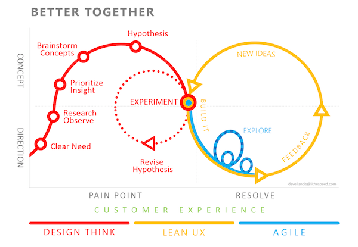

Projeto de Navegação e Interação
Textos
Temas para mini seminário

Ciclo de projeto. Fonte: https://brasil.uxdesign.cc/como-incluir-decis%C3%B5es-de-design-no-dia-a-dia-de-um-time-de-desenvolvimento-49829cff465f